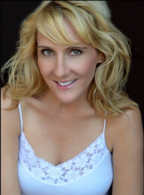

#6071 Alles was wir hatten
Alternativ: All We Had

 IMDB-Wertung: 5.6 / 10
IMDB-Wertung: 5.6 / 10  Metascore: 0
Metascore: 0 
Die 13-jährige Ruthie Carmichael (Stefanie LaVie Owen) versucht das Beste aus den widrigen Umständen im von der Weltwirtschaftskrise gebeutelten Amerika zu machen. Ihre vom Pech verfolgte Mutter Rita (Katie Holmes) haben die Auswirkungen der Großen Rezessionen ebenfalls fest im Griff: Trotz mehrerer Jobs leben die beiden nah an der Armutsgrenze. Die toughe Ruthie hat überdies mit ihrem einstigen, furchtbaren Freund zu tun und auch alltägliche Probleme wie ein Auto, das nicht anspringen will, bringen die beiden immer wieder an den Rand der Verzweiflung. Als sie dann auch noch aus ihrer Wohnung geworfen werden, scheint der Tiefpunkt erreicht zu sein und ihnen bleibt nur noch die Flucht in ein neues Leben. Dieses finden die beiden in einer kleinen, typisch amerikanischen Stadt, die sie warmherzig aufnimmt. Doch das Glück ist nicht von Dauer...
Jahr: 2016
Dauer: 104 Minuten
FSK: 12
Land: USA Studio: Gravitas VenturesTonspuren: DTS - ,
Untertitel: Deutsch,
Auflösung: 1080p (1920x800) Größe: 4157 MB
Genre: Drama
Regisseur: Katie Holmes
Drehbuch: Mordecai Richler
Soundtrack:
Darsteller:
 Richard Kind als Marty
Richard Kind als Marty Mark Consuelos als Vic
Mark Consuelos als Vic- Katherine Reis als Sally
- Odiseas Georgiadis als Ben
 Judy Greer als Patti
Judy Greer als Patti- Tim Markham als Older Guy
- Richard Petrocelli als Frank
- Osh Ghanimah als Pawn Shop Guy
- Michael Cavadias als Doctor
- Aly Brier als High School Student
- Lolita Foster als Ms. Simmons
- Randy Gonzalez als Guy
- Milly Guzman als AA Patron #1
- Siobhan Fallon Hogan als Mrs. Frankfurt
 Katie Holmes als Rita Carmichael
Katie Holmes als Rita Carmichael- Rahmel Long als AA Patron #2
-  Amelie McKendry als Midwestern Girl
- John McLaughlin als Assailant
- Stefania LaVie Owen als Ruthie Carmichael
 Luke Wilson als Lee
Luke Wilson als Lee- Mahaleia Gray als Student , uncredited
- Ismaelpeter Casillas Nelson als High School Student , uncredited
- Eve Lindley als Peter Pam
- Jack Ricardo Miller als Shopper
- Georgia Southern als Woman at gas station
- Jaiden Unthank als Basketball kid
Datei: X:\2016(A-F)\Alles was wir hatten (2016, FSK12, 1920x800).mkv seit 26.04.2017
Festplatte: HD 2016(A-Z)
 Es gibt insgesamt 147 Filme in der Gruppe '2016(A-F)'
Es gibt insgesamt 147 Filme in der Gruppe '2016(A-F)'